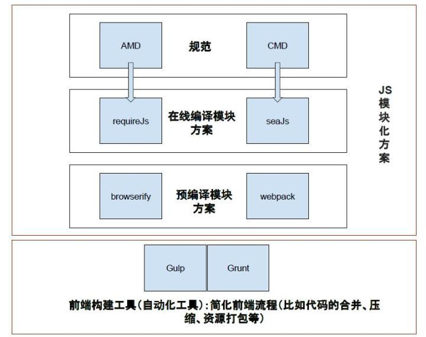
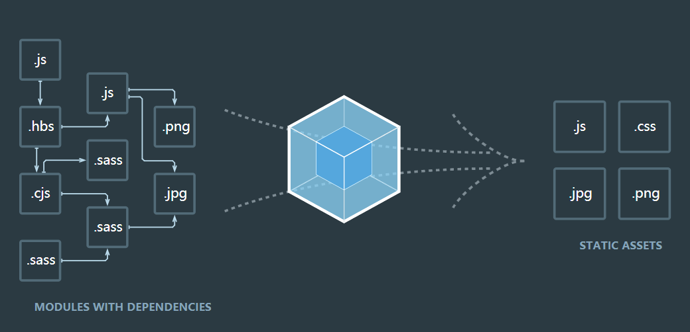
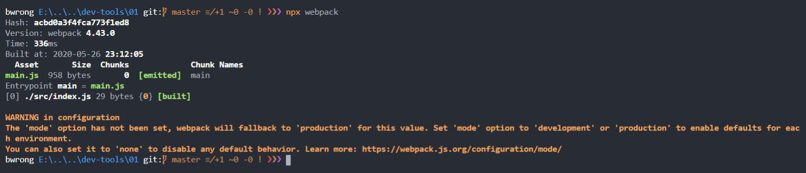
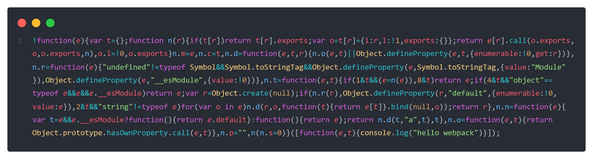
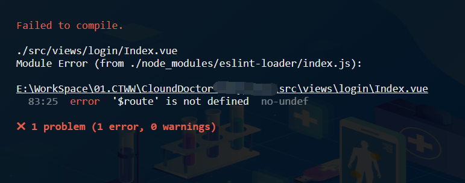

字数：8960， 阅读时间：28分钟
尽前行者地步窄，向后看者眼界宽。 ——《格言联璧·持躬类》
【前端工程化】系列文章链接：
- 【前端工程化】篇一 扬帆起航：开发环境
- 【前端工程化】篇二 白璧微瑕-包管理器
- 【前端工程化】篇三 席卷八荒-Webpack（基础）
- 【前端工程化】篇四 席卷八荒-Webpack（进阶）
- 【前端工程化】篇五 未来已来-Babel
- 【前端工程化】篇六 规矩方圆-ESLint
- 【前端工程化】篇七 沧海遗珠-其他工具
示例代码仓库：https://github.com/BWrong/dev-tools
声明：本篇文章基于webpack v4.43.0，如按照文中代码执行报错，请先检查依赖版本是否和示例代码仓库中一致。
前言
自Web2.0以来，前端技术日益蓬勃发展，前端仔们不再满足于切切页面、写写动画，而是能够做更多"高大上"的事情了。但随着项目规模和复杂度的提升，代码的依赖维护、代码压缩、代码风格审查等与业务无关但又不得不做的事情占据了开发人员越来越多的时间。那时，这些操作均只能依靠开发人员手动来进行处理，耗时耗力，完全是一个刀耕火种的时代（从前车马很慢，一生只够爱一个人😂）。
后来，NodeJS出现了，作为一门服务端语言，它拥有更加强大的能力，尤其是处理文件的能力，运行也不再受限于浏览器沙盒，可以直接在终端命令行运行。这些特性正是开发前端工程化的核心需求，所以有人开始借助NodeJS来做那些耗时耗力的工作，属于前端自己的工程化时代初见端倪。
当然，这里我们的重点是Webpack，所以不会花大量篇幅去讲述前端工程化的发展史，仅仅列出一些比较有代表性的工具，以致敬这些前浪们
- Grunt：基于任务的命令行构建工具，构建工具的先驱。
- Gulp：管道，流式处理，构建性能比grunt高，配置也比较简单。
- Browserify：把Commonjs打包成浏览器支持的包。
- Webpack：模块打包器，通过loader支持众多文件类型，支持插件，支持按需加载，提取公用代码等，生态完善，目前最流行的打包工具。
- Rollup：侧重于打包库、SDK，输出成果体积较小。
- Parcel：打包速度快，入口支持html，打包时会自动安装需要的插件，人家的口号是技术零配置。
- snowpack：打包速度快，无需打包工具。
在Webpack刚刚出来的时候，那个时候Gulp和Grunt还风华正茂，在网上经常有人拿它们来做对比，其实他们是不同类型的构建工具，不是太具有可比性。

如上图所示，虽说它们都是构建工具，但是Gulp、Grunt更加偏向任务式，所有的操作均需以任务的方式来构建；而Webpack则是模块化的编译方案，它通过依赖分析，进行模块打包，与它对比的应该是Browserify，Rollup之流。
目前来说，grunt和gulp，已经功成身退了，当下webpack无疑是最热门、最强大的打包工具。这都得益于维护团队海纳百川有容乃大的态度，Rollup的tree shaking、Parcel的零配置这些亮点都被webpack吸收了。也许有的人觉得是抄袭，但是咱们读书人的世界何来抄袭呢。更何况不是这样的话，不是得学更多的工具了，又何来我这一头乌黑靓丽的秀发呢？😜😜
好了，啰嗦了半天，该进入主题了，接下来，看看webpack官方的定义：
At its core, webpack is a static module bundler for modern JavaScript applications. When webpack processes your application, it internally builds a dependency graph which maps every module your project needs and generates one or more bundles.
译：Webpack 是一个现代 JavaScript 应用程序的静态模块打包器（module bundler），当 webpack 处理应用程序时，它会递归地构建一个依赖关系图(dependency graph)，其中包含应用程序需要的每个模块，然后将所有这些模块打包成一个或多个 bundle。
这里多次提到了模块，模块在前端开发中一般指JavaScript的模块化产物，相关的介绍网上也有很多，实在找不到也可以看看鄙人之前的文章再谈JavaScript模块化，这里我们不再赘述。但是这里Webpack所指的模块不仅仅是JavaScript中的模块，通过Loader，它可以处理任意类型的资源。广义上来说，在Webpack看来，任意资源都是模块。

安装与配置
现在Webpack最新的版本是4.43.0（注意现在5.0已发布，默认安装会是5.0），可以安装在全局，也可以安装到项目，这里推荐在项目本地安装。
npm init -y # 初始化npm配置文件
npm install --save-dev webpack # 安装核心库
npm install --save-dev webpack-cli # 安装命令行工具
备注： webpack4.0后，将核心和cli部分拆分开了，所以两个都需要安装，拆分开的好处就是核心部分可以在nodejs的项目中使用，不再受限于命令行环境，更加符合职责单一原则。
受Parcel的“刺激”，Webpack从4.0开始支持零配置，开箱即用，默认会使用/src/index.js作为entry，/dist/main.js作为输出成果。
建立如下文件：
- src
|- index.js
// index.js
console.log('hello webpack');
然后执行npx webpack，就可以看到打包结果：

在输出信息中，显示了本次打包的hash值、webpack版本、耗时等，还列出了打包的每个模块信息，包含资源名称、大小、chunk（后面会详解）等信息，另外在src同级目录会生成一个dist目录，下面会有一个main.js，即是打包成果，在index.html中直接引入该文件就可以了。

上面，其实我们已经成功完成了一个文件的打包，是不是很简单。不过仔细看看命令行输出的信息中，后面是有一大段警告的，作为一个有追求的程序猿，怎么可能让这种事情发生呢！究其原因，其实在webpack4.0中，建议在打包的时候传入mode，来告知其打包的目标环境是开发环境还是生产环境（不设置默认为production），以便它内部来做相应的优化，可以通过--mode参数来指定模式，如npx webpack --mode=production，这样就不会有警告了。
我们可以试试将mode设置为development后再打包一次，看看成果有什么不同（答案：development下代码未进行压缩）。
当然，也可以在命令行中配置参数来改变Webpack的打包设置，具体的用法可以查看Command Line Interface，常用的配置都可以通过命令行来配置，例如默认webpack会查找项目根目录下的webpack.config.js，我们可以通过webpack --config ./build/webpack.config.js来指定配置文件，在日常的开发中，一般都是通过配置文件来使用的，可以实现更加复杂的设置，而且更加方便。
核心概念
在开始前，有必要了解几个核心概念：
- chunk：指代码块，一个 chunk 可能由多个模块组合而成，也用于代码合并与分割。
- bundle：资源经过Webpack 流程解析编译后最终结输出的成果文件。
- entry：顾名思义，就是入口起点，用来告诉webpack用哪个文件作为构建依赖图的起点。webpack会根据entry递归的去寻找依赖，每个依赖都将被它处理，最后输出到打包成果中。
- output：output配置描述了webpack打包的输出配置，包含输出文件的命名、位置等信息。
- loader：默认情况下，webpack仅支持
.js文件，通过loader，可以让它解析其他类型的文件，充当翻译官的角色。理论上只要有相应的loader，就可以处理任何类型的文件。 - plugin：loader主要的职责是让webpack认识更多的文件类型，而plugin的职责则是让其可以控制构建流程，从而执行一些特殊的任务。插件的功能非常强大，可以完成各种各样的任务。
- mode：4.0开始，webpack支持零配置，旨在为开发人员减少上手难度，同时加入了mode的概念，用于指定打包的目标环境，以便在打包的过程中启用webpack针对不同的环境下内置的优化。
webpack的配置较多，接下来，仅对常用配置做一些了解，完整的配置可以查阅webpack-options。
**说明：**接下来的内容，使用的命令均使用前面一篇介绍的npm script来定义，而不必再每次都输入npx。
核心配置
mode
指定打包的模式和环境，取值为development, production 或 none 之中的一个，可以启用 webpack 内置在相应环境下的优化。其默认值为 production。
module.exports = {
mode: 'production'
};
或者通过命令行配置：
webpack --mode=production
| 选项 | 描述 |
|---|---|
| development | 会将 DefinePlugin 中 process.env.NODE_ENV 的值设置为 development。启用 NamedChunksPlugin 和 NamedModulesPlugin。 |
| production | 会将 DefinePlugin 中 process.env.NODE_ENV 的值设置为 production。启用 FlagDependencyUsagePlugin（添加依赖标识）, FlagIncludedChunksPlugin（给chunk添加id）, ModuleConcatenationPlugin（处理模块作用域）, NoEmitOnErrorsPlugin（避免生成异常的代码）, OccurrenceOrderPlugin（按次数进行模块排序）, SideEffectsFlagPlugin（处理Side Effects模块标识） 和 TerserPlugin（js压缩）。 |
| none | 不使用任何默认优化选项 |
**提示：**关于各选项webpack内部默认的具体配置，可以查看该文档。
context
用于指定基础目录，用于从配置中解析入口起点和loader，须为绝对路径，默认为启动webpack的工作目录。
module.exports = {
context: path.resolve(__dirname, 'app')
};
entry
打包的入口文件，一般为应用的入口，方便webpack查找并构建依赖图。
module.exports = {
entry: "./app/entry", // 如果仅有一个入口，可以简写为此方式，为entry:{main:"./app/entry"}的简写
entry: ["./app/entry1", "./app/entry2"], // 为entry:{main:["./app/entry1", "./app/entry2"]}的简写
entry: { // 多入口的方式，每项即为一个chunk，key为chunkName
a: "./app/entry-a",
b: ["./app/entry-b1", "./app/entry-b2"]
}
}
output
描述了webpack如何输出，值为一组选项，包含了输出文件名字、位置等信息。
module.exports = {
output: {
filename: '[name]_[chunkhash:8].bundle.js',
path: path.resolve(__dirname, 'dist')
}
};
output.filename：配置输出文件的名字，对于单入口的情况，需要设定为一个指定的名称，对于多入口的情况，可以使用占位符模板来指定。
| 模板 | 描述 |
|---|---|
| [hash] | 模块标识符(module identifier)的 hash |
| [chunkhash] | chunk 内容的 hash |
| [name] | 模块名称 |
| [id] | 模块标识符(module identifier) |
| [query] | 模块的 query，例如，文件名 ? 后面的字符串 |
| [function] | 可以使用函数动态返回filename |
[hash] 和 [chunkhash] 的长度可以使用 [hash:16]（默认为20）来指定。或者，通过指定output.hashDigestLength 在全局配置长度。
output.path：配置输出目录，值为绝对路径。output.publicPath：如果需要引用外部资源，可以通过此配置设置资源的地址，例如部署要将资源上传到CDN服务器，就需要填上CDN的地址。
如果打包一个类库或者sdk，可能还需要设置library、libraryExport、libraryTarget、umdNamedDefine等选项来配置类库暴露的名字及兼容的模块规范等，可查看官方指南。
loader
loader 用于对模块的源代码进行转换，在 import 或"加载"模块时解析文件，通过添加loader可以让webpack处理多种类型的文件。
module.exports = {
module: {
rules: [
{
test: /\.css$/,
use: [
{ loader: 'style-loader' },
{
loader: 'css-loader',
include: './src/assets', // 指定查找的目录，resource.include的简写
// exclude:'', // 指定排除的目录，resource.exclude的简写
options: {
modules: true
}
}
]
},
{ test: /\.ts$/, use: 'ts-loader' }
]
}
};
loader可以在配置文件的module.rules属性中设置，可以配置多个规则，每个规则通过test属性设置匹配的文件类型，在use属性中指定对应的loader及其对应的配置(options)。
对于匹配条件，webpack提供了多种配置形式：
{ test: ... }匹配特定条件{ include: ... }匹配特定路径{ exclude: ... }排除特定路径{ and: [...] }必须匹配数组中所有条件{ or: [...] }匹配数组中任意一个条件{ not: [...] }排除匹配数组中所有条件
**注意：**同一个规则可以指定多个loader，从右到左链式传递，依次对文件进行处理，当然可以通过enforce（可取值为pre | post，分别为前置和后置）强制改变执行顺序。
通过loader我们可以在js文件中导入css、img等文件，理论上可以实现解析各类文件，常用的loader可以在官网-Loaders中查询。
plugin
插件的目的在于解决 loader 无法实现的其他事。插件的本质其实是一个具有apply 方法的 JavaScript 对象，该方法会被webpack compiler 调用，并且 compiler 对象可在整个编译生命周期访问，用于自定义构建过程。
在配置文件的plugins属性中传入插件实例来使用插件：
plugins: [
new webpack.DefinePlugin({ // 内置的插件(DefinePlugin 允许创建可在编译时配置的全局常量)
// Definitions...
})
new HtmlWebpackPlugin({template: './src/index.html'}) // 第三方插件，需要安装
]
使用 Plugin 的难点在于掌握 Plugin 本身提供的配置项，而不是在 Webpack 中使用 Plugin。webpack拥有相当多的插件，常用的插件都可以在官方文档-plugins上查找到，文档中也有相关配置的说明和案例，也算比较友好了。
其他常用配置
resolve
resolve用于配置模块解析规则，可以通过此配置更改webpack默认的解析规则。
webpack的模块路径解析规则和Node.js 的模块机制一样。
- 如果是相对路径
- 查找当前模块的目录下是否有对应文件/夹
- 如果是文件则直接加载
- 如果是文件夹，则继续查找文件夹下的 package.json 文件
- 如果有 package.json 文件，则按照其中
main属性声明得到的文件名来查找文件- 如果无 package.json 或者无
main属性，则查找index.js文件- 如果直接是模块名
会依次查找当前目录下、父目录、父父目录、... 一直到根目录，直到找到目录下的node_modules文件夹，查找是否有对应的模块- 如果是绝对路径
直接查找此路径对应的文件
resolve.alias：用于定义一些路径简写占位符，也有人称之为路径别名映射，目的是简化模块导入时的路径。
module.exports = {
resolve: {
alias: {
@: path.resolve(__dirname, 'src/') //这里就将@映射到了/src/目录了，在使用时用@就行
}
}
};
resolve.extensions：解析文件时，缺省文件扩展名时，尝试自动补全的扩展名集，尝试的顺序从前到后，一般将高频使用的扩展名放在前面，优先匹配。
module.exports = {
resolve: {
extensions: ['.wasm', '.mjs', '.js', '.json']
}
};
resolve.enforceExtension：如果是true，将不允许加载无扩展名(extension-less)文件，也即是不会自动进行扩展名补全。resolve.modules：webpack 解析模块时应该搜索的目录，默认为node_modules，如果项目中某个文件夹频繁使用，就可以添加进此配置，引入文件时路径就可以省略该目录。
module.exports = {
resolve: {
modules: ['node_modules']
}
};
optimization
webpack4.0将一些优化的配置都放在了该属性下，根据mode来进行不同的优化，也可以进行手动配置和重写。
optimization.minimize：是否使用 TerserPlugin 压缩代码，production模式下，默认是true。
module.exports = {
optimization: {
minimize: false
}
};
optimization.minimizer：允许通过提供一个或多个定制过的 TerserPlugin 实例，覆盖默认压缩工具(minimizer)。
module.exports = {
optimization: {
minimizer: [
new TerserPlugin({
cache: true,
parallel: true,
sourceMap: true, // Must be set to true if using source-maps in production
terserOptions: {
// https://github.com/webpack-contrib/terser-webpack-plugin#terseroptions
compress:{
drop_console: true, // 去除consle
drop_debugger: true // 去除debugger
}
}
}),
],
}
};
devServer
在项目开发时，如果不能实时看到开发的预览效果，是不是心里没底？所以我们需要一个工具，来启动一个server，让我们在开发的时候可以实时预览，webpack-dev-server就是这样一个工具，它会基于express启动一个server，提供一些好用的功能：
- 自动打开浏览器
- 文件监听
- 自动刷新与模块热替换
- 跨域代理
这是一个非常实用的工具，用了就会上瘾系列。webpack-dev-server并没有被webpack内置，需要我们自行安装(npm i -D webpack-dev-server)，它所有的配置都在配置文件的devServer属性中。
-
devServer.before,devServer.after：其实相当于devServer的中间件，提供执行自定义处理程序的功能，本质是一个函数，接收devServer实例作为参数。例如，可以在before中我们可以来启动一个server用来做数据mock。
// webpack.config.js
module.exports = {
devServer: {
before: function(app, server) {
app.get('/some/path', function(req, res) {
res.json({ custom: 'response' });
});
}
}
};
devServer.host，devServer.port：分别用来配置启动server的主机地址和端口。
module.exports = {
//...
devServer: {
host: '0.0.0.0',
port: 8080
}
};
devServer.hot：开启模块热替换HMR（Hot Module Replacement）功能，开启后它会尽量采取不刷新整个页面的方式来局部热更新页面。
**注意：**必须有 webpack.HotModuleReplacementPlugin 才能完全启用 HMR。如果webpack-dev-server 是通过 webpack-dev-server --hot选项启动的，那么这个插件会被自动添加，否则需要把它手动添加到 webpack.config.js的plugins 中。
module.exports = {
//...
devServer: {
hot: true, // 开启模块热替换
// ...
},
plugins: [
new webpack.HotModuleReplacementPlugin() // 需要添加模块热替换插件，如果启动带上了--hot参数则不需要手动添加此插件
]
}
开启热替换后，需要编写控制代码来响应更新时的操作：
if (module.hot) { // 先判断是否开启热替换
module.hot.accept('./library.js', function() { // library.js更新将会触发此处的回调函数
// 使用更新过的 library 模块执行某些操作...
});
}
看起来，自己来写这些控制代码还是比较麻烦，不过幸运的是，很多loader（如style-loader、vue-loader）内部都实现了热替换，而不用我们自己编写。
-
devServer.inline：推荐设置为true，实时预览重载的脚本将以内联模式插入到包中，设置为false将使用iframe模式，采用轮询的方式执行实时重载。 -
devServer.open：配置是否自动打开浏览器。 -
devServer.overlay：当出现编译器错误或警告时，在浏览器中显示覆盖层提示，默认false。
-
devServer.proxy：在前后端接口联调的过程中，跨域是一个非常常见的问题，要是后端大哥装大爷的话，那工作就很难做下去了。跨域究其原因是受浏览器的同源策略限制，而服务端则不会有此限制。所以我们可以通过nodeServer将后端的接口服务代理到本地，在请求的时候直接访问本地nodeServer地址，然后nodeServer再将请求转发到目标服务端，拿到结果后返回给本地的请求。
proxy就是用来做这个事情的，它是基于强大的http-proxy-middleware来实现的，配置也是相同的。
module.exports = {
//...
devServer: {
proxy: {
'/api': {
target: 'http://your-host.com', // 代理的目标地址，/api的请求都会被代理到http://your-host.com/api
secure: false, // 如果使用了HTTPS，需要关闭此配置
pathRewrite: {
'^/api': '' // 重写,目标地址中是否包含/api, 如此设置/api的请求都会被代理到http://your-host.com
},
bypass: function(req, res, proxyOptions) { // 如果想自己控制代理，可以使用此配置来绕过代理
if (req.headers.accept.indexOf('html') !== -1) {
console.log('Skipping proxy for browser request.');
return '/index.html';
}
}
}
}
}
};
devServer.publicPath：资源的访问路径。
module.exports = {
//...
devServer: {
publicPath: '/assets/' // 可以通过http://localhost:8080/assets/*访问到assets目录下的资源
}
};
devtool
此选项控制是否生成以及如何生成 source map，不同的值会明显影响到构建(build)和重新构建(rebuild)的速度。
| devtool | 构建速度 | 重新构建速度 | 生产环境 | 品质(quality) |
|---|---|---|---|---|
| (none) | +++ | +++ | yes | 打包后的代码 |
| eval | +++ | +++ | no | 生成后的代码 |
| cheap-eval-source-map | + | ++ | no | 转换过的代码（仅限行） |
| cheap-module-eval-source-map | o | ++ | no | 原始源代码（仅限行） |
| eval-source-map | -- | + | no | 原始源代码 |
| cheap-source-map | + | o | yes | 转换过的代码（仅限行） |
| cheap-module-source-map | o | - | yes | 原始源代码（仅限行） |
| inline-cheap-source-map | + | o | no | 转换过的代码（仅限行） |
| inline-cheap-module-source-map | o | - | no | 原始源代码（仅限行） |
| source-map | -- | -- | yes | 原始源代码 |
| inline-source-map | -- | -- | no | 原始源代码 |
| hidden-source-map | -- | -- | yes | 原始源代码 |
| nosources-source-map | -- | -- | yes | 无源代码内容 |
+++非常快速,++快速,+比较快,o中等,-比较慢,--慢
一般在生产环境推荐使用none（不生成）或者source-map（生成单独的一个文件）选项，而在开发环境可以从eval、eval-source-map、cheap-eval-source-map、cheap-module-eval-source-map中选择一个。
webpack 仓库中包含一个 显示所有 devtool 变体效果的示例*。这些例子或许会有助于你理解这些差异之处。*看似值比较多，只要在对应的环境中根据需求（平衡构建速度和打包成果品质）配置合适的值就好。
externals
用来排除特定的依赖，排除的依赖将不会打包进成果中，而是在程序运行时再去外部获取。
例如，在开发一个library 的时候，如果有依赖其他的库，在打包库的时候就需要排除依赖的库，而不应该把依赖的库打包到我们的library里面。
另外，在日常的开发中，也可以利用此配置来实现资源以CDN方式引入：
<!-- index.html -->
<script
src="https://code.jquery.com/jquery-3.1.0.js"
integrity="sha256-slogkvB1K3VOkzAI8QITxV3VzpOnkeNVsKvtkYLMjfk="
crossorigin="anonymous">
</script>
// webpack.config.js
module.exports = {
//...
externals: {
jquery: 'jQuery'
}
};
// src/index.js
import $ from 'jquery'; // 此处的导入可以正常运行，但是打包的时候不会包含，运行的时候会去检索jquery全局变量
$('.my-element').animate(/* ... */);
cache
配置是否缓存生成的 webpack 模块和 chunk，可以用来改善构建速度。
上面就是一些常用的配置，掌握了这些，就可以在项目中自己来配置一套打包流程了。
实践一下
1. 目录规划
整个项目的目录结构，我们做如下规划：
- build // webpack配置文件目录
|- webpack.base.conf.js
|- webpack.dev.conf.js
|- webpack.prod.conf.js
- dist // 打包输出目录
- public // 放置不需要处理的静态文件和HTML模板
|- js
|- index.html
- src // 项目核心代码，与业务相关的都可以放在此处
|- assets
|- index.js // 入口entry
|- ...
用过vuecli2.0的同学应该会很熟悉这个结构。
2. 基础配置
虽然，webpack默认提供了两种Mode及内置了相应的优化，能够满足一些简单项目，但是一些复杂的项目远远不止这两套环境（还有测试、预发布等环境），每个环境中的配置也有着巨大差异，遵循逻辑分离原则，此时可以根据环境将配置文件拆分为独立的文件。
下面以只考虑两种环境为例：
| 实现功能 | 开发环境（速度优先） | 生成环境（性能优先） |
|---|---|---|
| 代码压缩 | 否 | 是 |
| 图片压缩 | 否 | 是 |
| css文件抽离 | 否 | 是 |
| 模块热替换 | 是 | 否 |
| devserver、proxy | 是 | 否 |
| source-map | eval-cheap-source-map |
none或者source-map |
除了上述罗列内容，实际情况可能还有更多的差异性，总的来看，一般就是开发环境更加侧重构建速度，生产环境更加侧重代码的执行性能。
我们可以将配置拆分成三个文件：
webpack.base.conf.js：开发环境和生产环境公用的配置，最终使用webpack-merge合并到dev和prod两个配置中。
// build/webpack.base.conf.js
const path = require('path');
const {CleanWebpackPlugin} = require('clean-webpack-plugin');
const HtmlWebpackPlugin = require('html-webpack-plugin');
module.exports = {
entry: '../src/index.js',
output: {
filename: '[name].[hash:8].js',
path: path.resolve(__dirname, '../dist')
},
plugins: [
new CleanWebpackPlugin(), //打包前清空输出目录
new HtmlWebpackPlugin({
title: 'webpack',
template: './public/index.html',
filename: 'index.html'
})
]
};
webpack.dev.conf.js：开发环境特有的配置，一些辅助开发的配置都放到此文件。
// build/webpack.dev.conf.js
const {merge} = require('webpack-merge');
const baseConfig = require('./webpack.base.conf.js');
module.exports = merge(baseConfig, {
mode: 'development',
devtool: 'inline-source-map',
devServer: {
contentBase: '../dist',
hot: true,
// ...
},
// ..
});
webpack.prod.conf.js：生产环境特有的配置，一些针对输出文件体积质量优化的都放到此文件。
// build/webpack.prod.conf.js
const {merge} = require('webpack-merge');
const baseConfig = require('./webpack.base.conf.js');
module.exports = merge(baseConfig, {
mode: 'production',
// ...
});
然后在npm script中配置对应的命令，来指定不同的配置文件：
// package.json
"scripts": {
"start": "webpack-dev-server --config ./build/webpack.dev.conf.js",
"build": "webpack --config ./build/webpack.prod.conf.js"
}
3. 功能完善
使用HTML模板
前端项目一般都会有一个入口（index.html），需要在此文件中引入打包后的资源，但是每次打包后手动将资源引入太费事，特别是输出文件的名字使用了占位符时（每次打包输出文件的名称都会不一样），简直就是搞事情嘛。此时，我们就可以通过 html-webpack-plugin来自动引入打包后的资源。
npm install html-webpack-plugin -D
// build/webpack.base.conf.js
const HtmlWebpackPlugin = require('html-webpack-plugin')
module.exports = {
// ...
plugins: [
new HtmlWebpackPlugin({
title:'应用名称',
template: './public/index.html', // 配置使用的文件模板，如果不配置，将会使用默认的内置模板
... // 其他配置按需食用
}),
],
}
**注意：**如果需要打包多页应用，仅需实例化多个html-webpack-plugin，在每个实例中配置相应的chunk即可。
// build/webpack.base.conf.js
module.exports = {
entry:{
app1:'../src/app1.js',
app2:'../src/app2.js'
},
plugins: [
new HtmlWebpackPlugin({
template: './public/app1.html', // 模板
filename: 'app1.html', // 打包输出文件名
chunks: ['app1'] // 对应的chunk，和entry中定义的chunk对应
}),
new HtmlWebpackPlugin({
template: './public/app2.html', // 模板
filename: 'app2.html', // 打包输出文件名
chunks: ['app2'] // 对应的chunk，和entry中定义的chunk对应
}),
]
}
自动清理输出文件
由于使用了占位符，每次输出的文件可能不一样，那么就需要在每次打包前清除一下上次输出的文件，clean-webpack-plugin就可以帮我们自动完成这件事。
npm install clean-webpack-plugin -D
// build/webpack.base.conf.js
const { CleanWebpackPlugin } = require('clean-webpack-plugin');
module.exports = {
plugins: [
new CleanWebpackPlugin() // 会自动清除输出文件夹
]
}
静态资源拷贝
有些资源是不需要webpack来进行编译的，如VueCli4.0中public中的资源文件，只需要将其拷贝到目标文件就可以了。CopyWebpackPlugin可以把指定文件或目录拷贝到构建的输出目录中。
npm install copy-webpack-plugin -D
// build/webpack.base.conf.js
const CopyWebpackPlugin = require('copy-webpack-plugin');
module.exports = {
plugins: [
new CopyWebpackPlugin({
patterns: [
// 将public/static/下的所有文件拷贝到dist/static目录中
{
from: './public/static/*',
to: 'static',
flatten: true // 拷贝是否不带路径，为true只会拷贝文件，而不会携带文件路径
},
// ... 多个需要拷贝的文件/夹在此继续添加
]
})
]
}
使用ES Next语法
ES规范越来越完善，ES6给我们带来了很多实用的新特性，能够大大提升开发体验，但浏览器的支持总是那么不尽人意。而Babel的出现，让我们可以在开发环境使用更时髦的语法（jsx也是可以的），然后生产环境将代码转换成浏览器支持的语法。关于Babel的具体介绍会放在后续内容中，这里不再赘述。
npm install babel-loader -D
npm install @babel/core @babel/preset-env @babel/plugin-transform-runtime -D
npm install @babel/runtime @babel/runtime-corejs3
// build/webpack.base.conf.js
module.exports = {
module: {
rules: [
{
test: /\.jsx?$/,
use: ['babel-loader'],
exclude: /node_modules/ //排除 node_modules 目录
}
]
}
}
在根目录创建一个babel配置文件babel.config.js。
// babel.config.js
module.exports = {
"presets": ["@babel/preset-env"],
"plugins": [
[
"@babel/plugin-transform-runtime",
{
"corejs": 3
}
]
]
}
注入全局变量
在使用一些框架的时候，需要在很多文件都引入一下，比如在使用React的时候，需要在每个文件都引入一下，否则会报错。这时，如果想偷个懒，利用ProvidePlugin来自动注入也是可以的。
// build/webpack.base.conf.js
const webpack = require('webpack');
module.exports = {
plugins: [
new webpack.ProvidePlugin({
React: 'react',
Component: ['react', 'Component']
})
]
}
如此，在写React组件时，就不再需要import react和component了。
注意：
- 这玩意虽好，可千万不要贪杯哟，过多的全局变量会出事的。
- 在开启ESLint时，还需要在
global中做对应配置，否则会报错提示对应模块未定义。
样式类文件处理
样式类文件处理主要包含样式文件引入、浏览器兼容性语法的自动补全及预处理器编译三部分内容。
css解析和引入
如果仅使用css来做为样式文件的话，配置相对比较简单，只需要借助css-loader让webpack可以解析css文件即可。
npm install css-loader -D
// build/webpack.base.conf.js
module.exports = {
//...
module: {
rules: [
{
test: /\.css$/,
use: 'css-loader',
exclude: /node_modules/
}
]
}
}
现在，webpack可以打包css文件了，但是样式并不会生效，因为它们根本没有插入到页面中，需要借助style-loader来做样式引入，它会在head中动态创建 style 标签，并将 css 插入到其中。
npm install style-loader -D
// build/webpack.base.conf.js
module.exports = {
//...
module: {
rules: [
{
test: /\.css$/,
use: ['style-loader', 'css-loader'], // 注意顺序，从后到前
exclude: /node_modules/
}
]
}
}
自动补全兼容性前缀
由于现在浏览器对某些css特性支持还不够完善，在使用这些新特性的时候，往往需要加上一些浏览器特定的前缀，也是一个比较麻烦的事情，这时候就轮到postcss上场了。
npm install postcss-loader postcss autoprefixer -D
// build/webpack.base.conf.js
module.exports = {
//...
module: {
rules: [
{
test: /\.css$/,
use: ['style-loader', 'css-loader', {
loader: 'postcss-loader',
options: {
plugins: function () {
return [
require('autoprefixer')({
"overrideBrowserslist": [
">0.25%",
"not dead"
]
})
]
}
}
}],
exclude: /node_modules/
}
]
}
}
看到这个丑陋冗长的配置，总感觉怪怪的，一般会将它们抽离到postcss和browserslist的配置文件中。
在项目根目录创建postcss配置文件postcss.config.js。
// postcss.config.js
module.exports = {
plugins: {
'autoprefixer': {}
}
};
另外再创建一个browserslist配置文件.browserslistrc，用来指定要兼容的浏览器。
> 1%
last 2 versions
not ie <= 8
现在配置文件看起就要舒服多了。
// build/webpack.base.conf.js
module.exports = {
//...
module: {
rules: [
{
test: /\.css$/,
use: ['style-loader', 'css-loader', 'postcss-loader'],
exclude: /node_modules/
}
]
}
}
使用预处理器
目前前端比较流行的三种css预处理器都有相应的工具进行处理，使用方法也是类似的，安装相应的loader和核心处理程序就可以了。
| 预处理器 | loader | 核心处理程序 |
|---|---|---|
| less | less-loader | less |
| sass | sass-loader | node-sass或dart-sass |
| stylus | stylus-loader | stylus |
以less为例：
npm install less-loader less -D
// build/webpack.base.conf.js
module.exports = {
//...
module: {
rules: [
{
test: /\.less$/,
use: ['style-loader', 'css-loader','postcss-loader','less-loader'],
exclude: /node_modules/
}
]
}
}
样式文件分离
经过如上几个loader处理，css最终是打包在js中的，运行时会动态插入head中，但是我们一般在生产环境会把css文件分离出来（有利于用户端缓存、并行加载及减小js包的大小），这时候就用到 mini-css-extract-plugin 插件。
npm i -D mini-css-extract-plugin
// build/webpack.base.conf.js
const MiniCssExtractPlugin = require('mini-css-extract-plugin');
module.exports = {
module: {
rules: [
{
test: /\.less$/,
use: [
// 插件需要参与模块解析，须在此设置此项，不再需要style-loader
{
loader: MiniCssExtractPlugin.loader,
options: {
hmr: true, // 模块热替换，仅需在开发环境开启
// reloadAll: true,
// ... 其他配置
}
},
'css-loader',
'postcss-loader',
'less-loader'
],
},
],
},
plugins: [
new MiniCssExtractPlugin({
filename: '[name].css', // 输出文件的名字
// ... 其他配置
}),
]
};
图片/字体文件处理
url-loader 和 file-loader 都可以用来处理本地的资源文件，如图片、字体、音视频等。功能也是类似的， 不过url-loader 可以指定在文件大小小于指定的限制时，返回 DataURL，不会输出真实的文件，可以减少昂贵的网络请求。
npm install url-loader file-loader -D
// build/webpack.base.conf.js
module.exports = {
modules: {
rules: [
{
test: /\.(png|jpg|gif|jpeg|webp|svg|eot|ttf|woff|woff2)$/,
use: [
{
loader: 'url-loader', // 仅配置url-loader即可，内部会自动调用file-loader
options: {
limit: 10240, //小于此值的文件会被转换成DataURL
name: '[name]_[hash:6].[ext]', // 设置输出文件的名字
outputPath: 'assets', // 设置资源输出的目录
esModule: false
}
}
],
exclude: /node_modules/
}
]
}
}
注意：
limit的设置要设置合理，太大会导致JS文件加载变慢，需要兼顾加载速度和网络请求次数。
如果需要使用图片压缩功能，可以使用 image-webpack-loader 。
实时预览及模块热替换
在开发环境，可以借助webpack-dev-server启动一个server来实时预览应用程序。由于webpack-dev-server并不包含在核心库中，所以需要额外安装。
npm install webpack-dev-server -D
// build/webpack.dev.conf.js
module.exports = {
//...
devServer: {
port: '8080', //默认是8080
hot: true, // 开启模块热替换
publicPath:'/', // 构建好的静态文件访问路径，可以和output.publicPath保持一致
inline: true, //默认开启 inline 模式，如果设置为false,开启 iframe 模式
stats: "errors-only", //终端仅打印 error
overlay: true, //启用浮层提示
clientLogLevel: "silent", //日志等级
compress: false, //是否启用 gzip 压缩
contentBase: path.join(__dirname, "../public") , // 配置额外的静态文件内容的访问路径
proxy: { // 请求代理,解决开发环境跨域问题
// 根据情况配置
}
},
plugins: [
new webpack.HotModuleReplacementPlugin() //需要添加模块热替换插件
]
}
优化调试功能
为代码生成source-map有助于调试排错，一般在开发环境，由于是本地加载，我们优先考虑map文件的生成速度，可以不用额外单独生成map文件，而在生产环境，则需要不生成或者单独生成文件，优先考虑加载速度。
// build/webpack.dev.conf.js
module.exports = {
devtool: 'cheap-module-eval-source-map' // 开发环境下使用内联方式，忽略列信息
}
// build/webpack.prod.conf.js
module.exports = {
devtool: 'none' // 也可以使用'source-map'
}
除了上述配置项，我们一般在开发环境还会开启ESLint，由于后面有一篇专门的内容来叙述，所以此处不赘述。
到此，我们就能够自己进行打包配置了，日常开发应该是可以满足了。
结语
其实webpack配置很多，相信没有一个人能够记住如此之多的api，这也是困扰初学者的一个问题。这里和大家分享一下我的学习方法：
-
首先，了解webpack是解决什么问题及有哪些能力，而不是一开始就去记忆那些枯燥的配置，成为所谓的webpack配置工程师。
-
其次，按照功能和用途将api分类，方便记忆和后续的查阅。特别是loader和plugin，数量众多，每个的配置也不一样，我们只需要了解处理特定类型的文件和操作该用哪个就行，不必记住每个的配置。
-
最后，在需要用到某个功能的时候，根据上一步的分类，再去查阅对应的文档。官网也提供了完整的配置，可以很方便的查找对应的配置文档。

早期的文档
相比早期的文档，目前官方网站上的文档质量已比较完善和友好了，自行修炼完全没有问题了（找个妹子双修效果更好哦）。
好了，关于webpack的基础部分就告一段落了，在接下来我们将会着重介绍一些性能优化及原理方面的东西，下篇再见吧！
参考文档：webpack官网-中文，深入浅出webpack